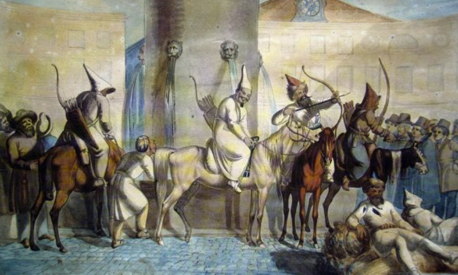
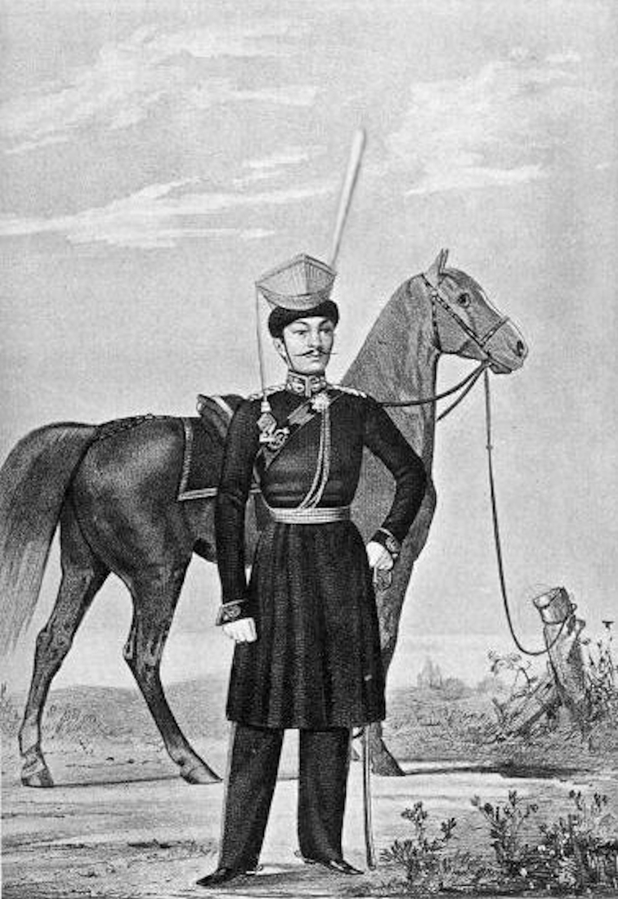
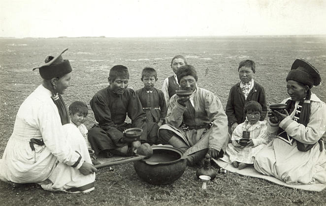
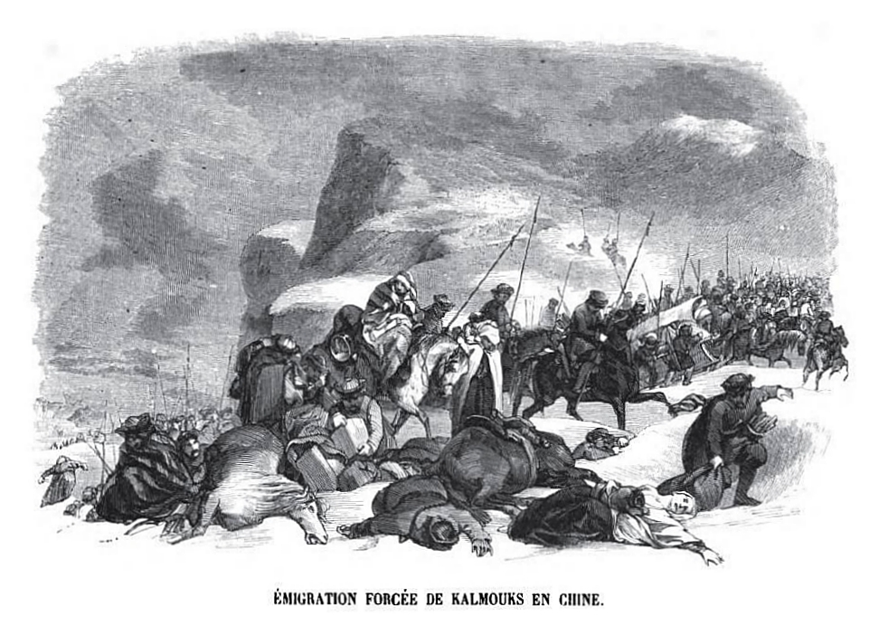
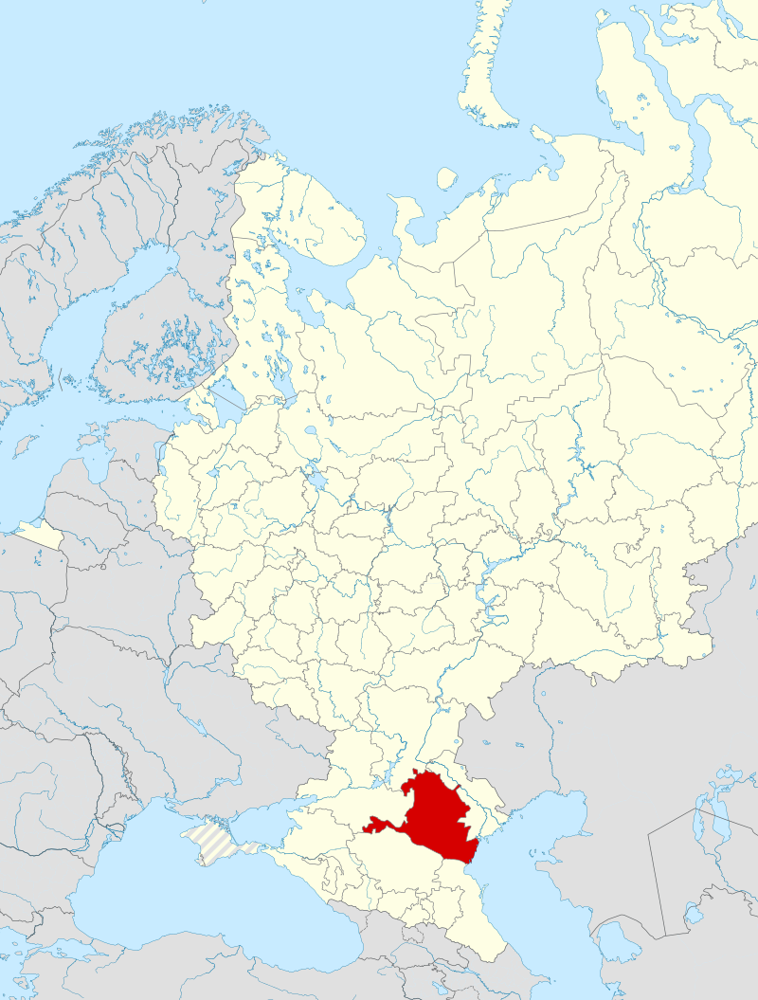
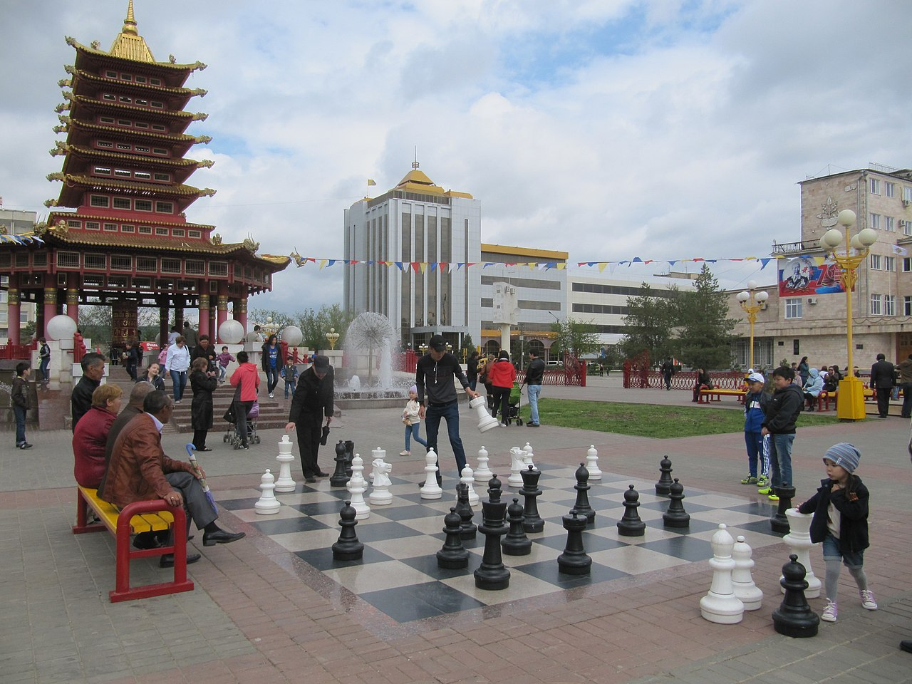
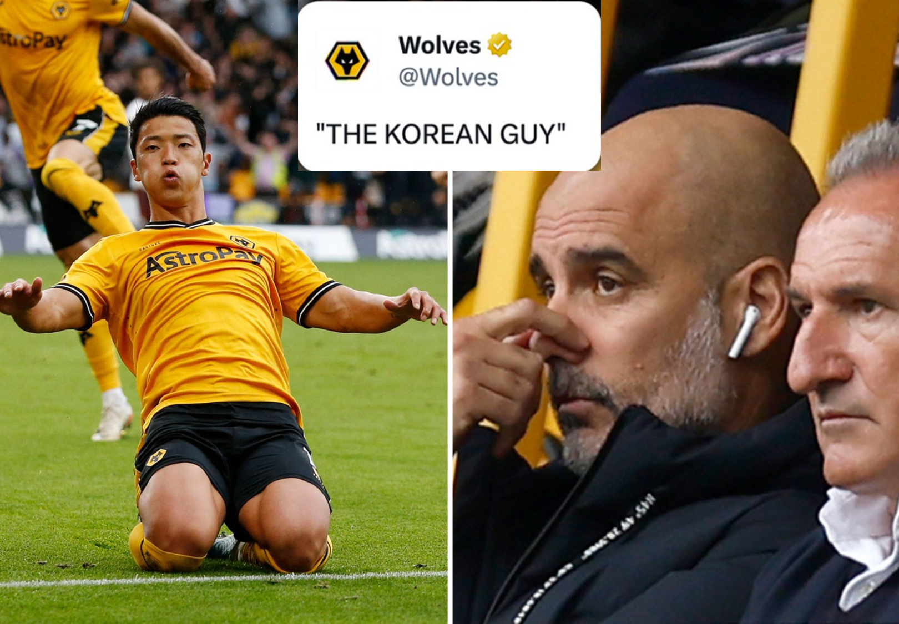

새로운 전쟁의 준비 (5) - 러시아군의 상황
게시: 2023-11-13T06:30:12+09:00
지난 편에서 프로이센군의 상황을 대충 보셨습니다만, 러시아군의 상황은 어땠을까요? 생각보다 나쁘지 않았습니다. 뭐니뭐니 해도 국가는 덩치가 깡패라고, 러시아는 대국이기 때문이었습니다. 러시아군은 나폴레옹의 침공이 시작된 1812년 8월부터 1813년 8월까지의 1년 동안 대략 65만 명을 징집했습니다. 당시 러시아 인구가 대략 3천만이었으니 전체 인구의 거의 2.2%에 해당하는 엄청난 비율이었습니다. 덕분에 휴전 기간 중 러시아군은 기대한 만큼은 아니었지만 상당한 수준의 병력 보충과 보급품, 그리고 장비를 갖출 수 있었습니다. 그 동안 러시아군이 충분한 병력과 장비를 갖추지 못한 것은 본국 러시아와의 거리 때문이었지 본국의 자원이 부족했기 때문은 아니었거든요. 휴전 직전만 하더라도 바클레이는 탄약이 부족하다는 이유로 폴란드로 후퇴해야 한다고 주장했는데, 8월이 되자 러시아군 지휘관이었던 랑제론에 따르면 탄약이 넘쳐 났습니다. 또한 러시아군의 기타 장비, 특히 군복에 있어서는 매우 훌륭한 편이었습니다. 이는 꽤 주목할 만한 일인데, 여태까지 참전하고 있지 않던 오스트리아군만 하더라도 부대 편성에 있어 가장 어려움을 겪던 부분이 바로 군복 부족이었다는 것을 고려하면 더욱 그렇습니다. 이는 러시아의 섬유 산업이 프로이센이나 오스트리아보다 더 뛰어났기 때문은 물론 아니었습니다. 프로이센이나 오스트리아가 가진 자원을 다 쏟아붓는 것에 비해, 러시아는 많은 자원 중 일부만 이 원정에 동원했기 때문에 가능한 일이었습니다. 러시아가 왜 대국인지, 왜 나폴레옹은 1807년 러시아와 틸지트 조약을 통해 유럽을 동서 양대 제국으로 분할 통치하려 했는지를 깨닫게 해주는 부분입니다. 휴전이 끝나는 8월 중순까지, 러시아는 슐레지엔 및 브란덴부르크, 메클렌부르크에 총 18만이 넘는 병력과 639문의 야포를 배치했습니다. 이는 전체 연합군의 1/3이 넘는 병력으로서, 러시아가 이 제6차 대불동맹전쟁의 중추라는 것을 여실히 보여주는 숫자입니다. 그 뿐만이 아니었습니다. 그 병력들 외에도 단치히에는 59문의 대포를 갖춘 3만의 정규군이 포위전을 지속했습니다. 또 로바노프(Dmitry Lobanov-Rostovsky)의 대기군(Army of Observation) 5만이 점령한 바르샤바 공국에서 베니히센은 추가로 7만 병력과 200문의 야포를 갖춘 폴란드 방면군(Army of Poland)을 신규 편성해놓고 있었으며, 이들은 전황에 따라 서쪽으로 이동할 준비를 하고 있었습니다. 흔히 중국이나 러시아 같은 덩치가 큰 나라의 군대를 숫자만 많을 뿐 오합지졸로 이루어진 '당나라 군대'로 폄하하는 경우가 많습니다만, 그 질적인 부분도 그렇게 나쁘지 않았습니다. 무엇보다 러시아군은 바로 작년에 천하무적 나폴레옹이 2년간이나 공들여 편성했던 러시아 원정군을 전멸시킨 바로 그 군대였습니다. 프로이센군의 뮈플링 대령이 점검해본 결과, 블뤼허의 슐레제엔 방면군에 배속된 자켄(Fabian von der Osten-Sacken)의 러시아 군단에는 고참병들이 생각보다 많이 포함되어 있었습니다. 이들 고참병 대부분은 예전에 오스만 투르크군과 싸웠다가 제대한 뒤, 이번에 다시 소집된 병사들로서, 전투 경험이 많고 숙련된 베테랑들이었습니다. 러시아군의 기병대도 장비나 군마가 매우 훌륭한 편이었습니다. 1812년 원정 당시 프랑스군으로부터 멸시도 받았지만 동시에 공포의 대상이 되었던 코삭 기병들도 이때 즈음 해서는 유럽 군대를 상대로 어떻게 싸워야 하는지 터득한 뒤라서 꽤 훌륭한 기병대가 되어 있었습니다. 다만 러시아군 기병대에는 일부 바슈키르(Bshkir)인들과 칼믹(Kalmyk)인들도 전통적인 복장과 무장을 한 채로 참여하고 있었습니다. 바슈키르인들은 투르크 계통이고 칼믹인들은 몽골 계통인데, 이들은 과거 몽골 제국의 후예로서 러시아 남부에 정착했던 유목민족이었습니다. 이들의 무장과 전술, 그리고 러시아에 대한 모호한 애국심(?) 때문에 이들은 러시아 장군들의 신뢰를 얻지 못했고, 그래서 정찰 임무에도 투입되지 못할 정도였습니다. 하지만 이들은 프랑스군 후방에서의 약탈과 교란 활동에 매우 유용하게 활용되었습니다.

(1814년 파리에 입성한 바슈키르인들입니다. 과거 킵차크 한국의 후손이라고 할 수 있는 이 유목민들은 파리의 분수에서 말에게 물을 먹이고 있었는데, 난생 처음 보는 이 중앙아시아 유목민들을 보기 위해 몰려든 파리 시민들에게 자신들의 활을 당겨보이며 뽐을 내고 있다는 설명입니다.)

(이 그림은 1812년 러시아군 내의 칼믹 기병이라는 그림입니다만, 실제로는 이렇게 러시아화된 기병보다는 전통 복장과 무장을 갖춘 칼믹 기병들이 훨씬 더 많았을 것입니다.)

(19세기 후반에 촬영된 칼믹인들의 모습입니다. 칼믹인들은 중국 북서부 준가르 지역을 고향으로 하는 몽골계 유목인들로서, 몽골 제국 팽창기에 카프카스 지역에 진출한 민족입니다. 이들이 만든 칼미키아 한국은 18세기 초반까지도 자치권을 유지했으나, 그 이후 러시아 제국에게 점점 자치권을 빼앗겼습니다.)

(그런 압제에 반발하여 이들의 절반인 약 20만 정도는 1770년대에 고향인 준가르로 돌아가기로 하고 대거 이동에 나섰고, 당시 러시아의 여제였던 예카테리나 대제는 코삭 기병들을 동원하여 그 이동을 막으려 했지만 양측에서 많은 희생만 내고 결국 막지 못했습니다. 그렇게 돌아간 20만 중 많은 수가 추위와 갈증, 카작과의 전투에서 사망했고, 당시 청나라 영토가 된 준가르로 무사히 돌아간 사람은 약 7~8만 정도에 불과했습니다.)

(러시아에 남은 칼믹인들은 이후로도 명맥을 계속 이어 나갔고, 지금도 칼미키아 공화국을 이루고 있습니다. 이들은 유럽 내의 유일한 불교 국가입니다.)

(칼미키아 공화국의 수도 엘리스타(Elista)의 거리 풍경입니다. 동양식 정자 건물이 눈에 띕니다.) 이렇게 훌륭한 군대를 이끌고 블뤼허의 슐레지엔 방면군에 배속된 러시아군 지휘부는 블뤼허와 그의 참모들로부터 열렬한 환영을 받았을까요? 이미 반복해서 들으셨지만 블뤼허와 그나이제나우는 물론, 그들과 사이가 좋지 않던 요크조차도 러시아군에 대해 반감이 많았습니다. 이들은 모두 독일 민족주의자였고, 러시아군이 지나치게 소극적으로 싸운다는 불만을 가지고 있었기 때문이었습니다. 그나마 블뤼허의 지휘 밑으로 러시아군이 숙이고 들어왔기에 망정이지, 이들이 러시아군 사령관 밑으로 기어들어가야 하는 상황이었다면 이들의 기분은 더 안 좋았을 것입니다. 아무튼 이 러시아 장군들을 맞이하는 프로이센 지휘부는 그다지 호의적이지는 않았습니다. 러시아군 장성들도 불만이 많았습니다. 일단 이들은 자신들이 누가 봐도 진짜 주전장인 보헤미아군에 배속되지 못하고 3개 방면군 중에 가장 약체인 슐레지엔 방면군에 배속된 것 자체가 불만이었습니다. 일이 이렇게 되면 짜르의 눈 앞에서 공을 세울 기회가 없어지기 때문이었습니다. 물론 꼬장꼬장하고 무식하다는 소문이 많았던 블뤼허 밑으로 배속된 것이 유쾌하지도 않았습니다. 그런 러시아 장군들 중에 가장 큰 영향력을 가진 선임자는 랑제론(Louis Alexandre Andrault de Langeron)이었습니다. 교양있는 프랑스 망명 귀족으로서, 연줄이 아니라 자신의 능력으로 러시아군에서 승진하고 자리를 잡은 실력자였던 랑제론은 블뤼허와 모든 면에서 전혀 궁합이 맞지 않았습니다. 알고 보면 블뤼허는 정규 군사 교육도 받지 못했기 때문에 전략은 물론 전술적인 면에서도 뛰어난 인물은 아니었습니다. 그렇다고 여태까지 빛나는 전공을 세운 것도 없었습니다. 결정적으로 블뤼허는 말투나 옷차림 등도 촌스러운 편이었고, 배운 것이 없다보니 다른 프로이센 장교들과는 달리 당대의 제1 외국어였던 프랑스어를 전혀 하지 못했습니다. 이건 마치 21세기 외교관이 영어를 못한다는 소리와 똑같은 것이었습니다. 게다가 블뤼허와 그나이제나우는 러시아를 멸시하는 것 못지 않게 모든 프랑스적인 것을 다 싫어했습니다. 바로 1806년 예나-아우어슈테트 패전의 상처 때문이었습니다. 3류 국가 프로이센이 유일하게 잘하는 것이 싸움질이었는데, 예나-아우어슈테트 전투는 마치 주먹질이 유일한 자랑이었던 빈민가 출신 복서가 서울대 졸업한 잘 생긴 재벌 3세 의사에게 링 위에서 KO를 당한 것과 같은 치욕과 상처를 준 사건이었습니다. 랑제론은 나폴레옹을 원수로 여기는 프랑스 망명 귀족 출신이었지만, 블뤼허와 그나이제나우는 랑제론이 프랑스 출신이라는 것에만 꽂혔습니다. 사태를 더 나쁘게 만든 것은 랑제론도 그에 못지 않게 독일에 관계된 모든 것이 촌티가 폴폴 난다고 멸시하는 사람이었다는 점이었습니다. 딱 하나, 랑제론이 인정하는 것은 블뤼허가 칼 싸움 실력은 좋더라는 것이었습니다. 랑제론은 블뤼허를 지칭할 때 그냥 'bon sabreur'(봉 사브뢰흐 - 괜찮은 칼잡이)라고 불렀는데, 이는 결코 호의적인 호칭이 아니었습니다. 랑제론의 이런 태도는 휘하 러시아 장교들에게도 그대로 전염되었습니다. 러시아 장교들은 작전 기간 내내 프로이센군에 대해 좋지 않은 감정을 가지고 있었습니다.

(랑제론이 블뤼허를 '그 괜찮은 칼잡이'라고 불렀던 어감은, 최근 맨시티 과르디올라 감독이 황희찬의 이름을 몰라 '그 한국인'이라고 불렀던 것과 비슷한 거라고 생각하시면 됩니다. 물론 그 직후 경기에서 ㅋ) Source : The Life of Napoleon Bonaparte, by William Milligan Sloane Napoleon and the Struggle for Germany, by Leggiere, Michael V https://en.wikipedia.org/wiki/Bashkirs https://en.wikipedia.org/wiki/Kalmyks https://en.wikipedia.org/wiki/Kalmykia https://en.wikipedia.org/wiki/Kalmyk_Khanate